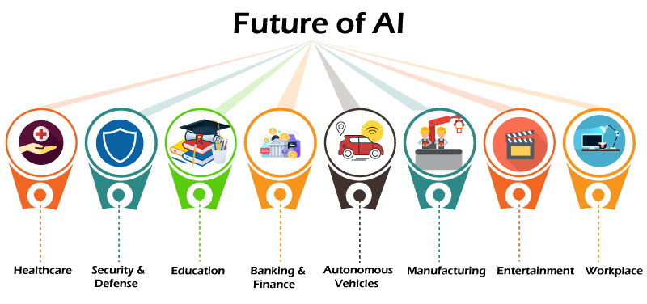

How AI Has Changed the World
Education
- Students utilizing AI to complete assigments and further learn about topics.
- Teachers required to use AI checking tools or to allow AI within the curriculum.
- Potential for AI hallucination; greater care required to prevent the spread of misinformation.
- Greater reliance on AI, age demographic is wider as it grows in popularity.
- Easily accessible, publicly available resource to learn for anyone with Internet.
Industry
- Creation of new AI-specialized positions.
- Automation of repetitive tasks in various industries.
- Shifts in demand for technical versus manual labor.
- Tech market roles shift entirely, people needed to manage AI systems while other roles become deprecated.
- New value seen in the human aspect of choice industries, such as the service industry.
Technology
- Competition with search engines for daily users.
- More automation in trivial tasks and common usage.
- Rapid advancements in machine learning algorithms.
- Development of AI-driven tools for businesses.
- Expansion of cloud-based AI services.
- AI integration into our lifestyle: cars, media, banking, etc.
